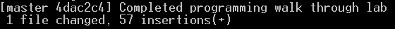
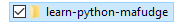

Frequently Asked Questions
About The course
Why do you make us program on our own computers? Why not use the lab computers?
There’s a couple reasons for this. First learning to program is difficult so we want you to be in a comfortable and familiar environment when you’re learning. Second, we want you to use the tools and techniques of real programmers, and if you we’re going to teach yourself programming you’d use your own device! Finally, we want you to be able to continue to code after the course is over!
All these due dates. How do I keep track of what is due when?
The Blackboard My Grades tool is your official source for due dates of our course deliverables, for items not-yet posted to Blackboard, consult the class schedule.
As far as “when” on that day:
- Out-of-class activities such as diagnostic quizzes due by 11:59 PM on the due date.
- In-class activities are due by the start of class, 8:00 AM on the due date. For homework, this means your code must be committed prior to the due date.
Homework
How do you know our homework was turned in on time?
Git records a time stamp of when you commit your code changes. When you push this code to GitHub the changes are logged there.
If you grade our homework in class, why must we submit it via Git?
Your homework is due weekly, but some weeks, thanks to examination we cannot grade it in class. On exam weeks we will grade it via GitHub.
Also if we need to check to make sure you completed the homework before class we can check your commit history in GitHub.
Which of the homeworks you assign is graded?
That’s the secret. We expect you to work on all the homework and we’ll randomly select one to grade in class.
How does this in-class grading work?
At the start of class, it will be revealed which of the “Now You Code” homework assignments we will grade. The evaluation process takes under a minute. You should plan on having your code open and ready for when your professor comes around.
If you have it started, you get a point. You then earn 4 extra points in sequence if it:
- Executes, and then
- Solves the intended problem, and then
- Can be explained by you ( you may be asked some simple questions about your code. ), and then
- Is well written (can be easily read / understood by your Professor, solves the problem as directed.)
These points are stack-able, meaning you can’t get a point for well written code it if it doesn’t execute, a score of 1/5. Also if its not well written you cannot get a point for explaining it so your grade would be a 3/5.
We will verbally tell you your grade as part of the evaluation process.
It’s exam week. How will you grade the homework?
We’ll grade your GitHub submission on exam week. No in-class grading of homework.
How do I know which Homework I do in IDLE versus Jupyter Notebook?
The In-Class coding labs are always in Jupyter Notebook.
The Now You Code exercise files which end in .py should be done in IDLE, those files ending in .ipynb should be completed in Jupyter notebook. Another way to remember this is the first two Now You Code homework exercises (1 and 2) are done in Jupyter Notebook, the last two (Now You Code 3 and 4) are done in IDLE.
Zybook
Is the Zybook graded?
We will track your use of the Zybook but it is not graded. Instead, the information covered in the Zybook will appear as questions on the Diagnostic Quizzes. If you are not completing the assigned readings as instructed we will flag you in Orange Success.
What should I read from the Zybook before class?
Before class you should read the entire chapter and complete the participation activities.
What should I read from the Zybook after class?
After class, you should attempt the Challenge Activities as a deep-dive. You should ONLY attempt these after you have completed your homework.
Diagnostic Quizzes
What time are the quizzes due?
Diagnostic quizzes are due by the end of the day (11:59 PM) on the day before lecture. You will not be able to complete the quiz after the due date.
Why don’t I get the same questions as someone else?
Each student is issued 5 questions at random from a pool of several dozen questions. Each of the questions covers an important concept from the assigned readings.
When I re-take the quiz, how come my questions are different?
For each quiz a random set of 5 questions is pulled from the pool. This is by design. You’re responsible for all the concepts in the unit, not just the questions you’re issued!
I forgot to take a quiz! What can I do?
This is why we drop a quiz. Please remember to take them the day before Lecture.
Are these quizzes open book?
Yes, but that does not mean you should skip the chapter. That’s a bad idea. We suggest reading the chapters, taking the 1 diagnostic quiz, and if you don’t like your score, study the important concepts from the lesson and then re-take the quiz.
Why must I take the quiz before class. It doesn’t seem fair.
The point of the diagnostic quiz is to ensure you’re keeping pace with the readings. You have no chance of learning to program if you don’t understand the concepts first.
For example you can’t write a non-deterministic loop with 2 exit conditions if you don’t know what a non-deterministic loop or exit condition is!
Participation
How do you grade my participation?
We will use Google Forms, Participoll, and Recitations to gauge your level of participation. Participation is a measure of attendance plus your level of engagement during class lecture.
We expect 100% attendance and participation during lecture.
I came in late! How do I get credit for attendance?
You can’t. You need to be in class at the beginning when attendance is taken. There will always be at least a 5 minute window where attendance is recorded. Please come to class on time!
If I miss attendance, but participate in lecture will I get credit for participation?
Make sure you arrive on time to class so that this isn’t an issue!
Exams
I cannot make one of your exams, I missed an exam. Can I make it up?
No. Exams are issued during class time, so there should be no reason for missing the exam! There are no make-ups, but we do drop your lowest exam score.
How much time do we get to take the exam?
30 minutes. There are 30 questions on the exam, so that’s 1 minute of time per question, which is more than adequate.
What is the exam format?
The exam will be issued on paper in multiple-choice format. There are multiple versions of the exam with a different arrangement of questions and answers. All students receive the same exam.
Exam questions test for concepts, as well as the knowledge of those concepts in context. For example a question might ask for the definition of a pre-test loop, or for you to identify if code contains a pre-test loop. Another question might ask you to trace code using a pre-test loop to evaluate the output. The exam is about 50% concepts, 50% application of those concepts.
Do I place my answers on the exam itself?
You should use the scan-tron (bubble) sheet or provided header sheet and answer on the exam as backup in case the scan-tron system is down.
Will you give me the exam back after its graded?
No, but you’re welcome to come to office hours where I will go over the exam with you.
Do the exam questions come from the pool of diagnostic quiz questions?
No, but some of the questions will be similar. The examination asks questions at a higher level of comprehension that the diagnostic quizzes, which just test knowledge of concepts.
For example a question might ask for the definition of a pre-test loop, or for you to identify if code contains a pre-test loop. Another question might ask you to trace code using a pre-test loop to evaluate the output. The exam is about 50% concepts, 50% application of those concepts.
After the exam is over, may I leave?
No. After the exam is over and the exams are collected, we’ll work on the In-Class Coding lab for that week.
Git and GitHub Classroom
How do I turn in my homework via GitHub Classroom?
How do I save my changes to GitHub?
How do I commit my code and push to GitHub?
It’s easy! In fact, you should get in the habit of committing and pushing your code changes after each of your coding sessions. There’s no harm in doing this and it only provides protections against losing your work!
- First open a command line in the folder where you cloned your GitHub repository.
This should belearn-python-githubaccount. - Type
git status
first to see which files you’ve changed.

In the screenshot, this student has completed the files of lesson 02. Git is telling you at this point none of these changes are being tracked. - Type
git add --all
to track all the changes you’ve made.

In the screenshot, each of the changed files has been added to the list of files to be committed. NOTE: You can ignore the warnings. - Type
git commit -am "message"
wheremessageis your commit message. This is useful for keeping track of what you did during that coding session. For example:

In the screenshot, I’ve completed lesson 02. - Finally, push your changes to GitHub.
Type:git push origin master
the wordoriginrefers to GitHub (where you cloned from) andmasterrefers to your branch.

NOTE: between any steps in the process you can check the repository status.
Type: git status
With the changes on GitHub you can now view them on your repository website.
How do I view my history of commits on my computer?
To view a history of your local commits (commits on your computer), also known as viewing your commits locally, type:
gitk
This brings up a GUI window where you can easily view the commits.

The top section of gitk has 3 cells where you can select a particular commit to view.
- In the first cell, you can select it by commit message.
- In the second cell you can select the commit by author (Who made the commit).
- In the third cell you can select the commit by date and time. IMPORTANT: we use this to ensure you’ve completed your homework on time!
The bottom section of *gitk has 2 cells:
- the right cell let’s you select the file changed as part of the commit.
- the left cell let’s you see what changed in the commit
- lines in red beginning with a
-were removed - lines in green beginning with a
+were added
- lines in red beginning with a
NOTE: If you have a problem with gitk you can view your commits on the GitHub Website. Simply Logon to the site and click on your repository.
How do I work on multiple devices?
The entire point of using a service like GitHub is that is makes multi-device workflow easy. GitHub serves as the central repository for the latest version of your code.
Setup:
On each device you you plan to code on follow the steps to Clone the GitHub Repository from GitHub Classroom from the Course Setup Documenation.
Once each device has a clone of the repository, here’s our suggested workflow:
When it’s time to work on your laptop / desktop / remote lab / :
- Open the command line inside your local git repository.
- Get the latest version of your own stuff from GitHub:
git pull origin master - Program as usual, when you’re at a stopping point:
a. Add changes:
git add –allb. Commit them with a message:git commit –am "Worked on lab 02"c. Push those changes up to GitHub:git push origin master
When you get to the other device you plan to work on, repeat the steps! git pull origin master ensures that device has all the changes you made earlier!
What is my Github repository website?
If you open a command window in your repository and type: git remote -v you will see the URL to your repository. Copy and paste it into your we browser to get to your website.
NOTE: Your repository website should look like this https://github.com/IST256/learn-python-XXXXX where XXXXX is your GitHub account.
How do I pull down an updated version of the official learn-python into my repository?
The professor said I need to pull down an updated version of learn-python. How do I do that?
In GutHub terms this is called syncing a fork. Here’s our procedure.
- Open the command line in your Learn-Python git folder.
- Make sure your git repository is in sync with GitHub. (Meaning, you’ve done your usual git workflow of
git add --all, thengit commit -m "message"thengit push origin master). You can check to make sure you are ready to merge.
Type:git status
It should sayon branch master,up to date with origin/masterandnothing to commit. If it does, you are ready to proceed. - Next we need to add an upstream. This is just a fancy word for “the official
learn-pythonrepository.
Type:git remote add upstream https://github.com/IST256/learn-python.git - With your upstream created let’s get all the code changes from the upstream.
Type:git fetch upstream - Now we need to ensure you’re on the local master branch. More than likely you are (since we didn’t explain branching in this course), but to be safe
Type:git checkout master - Finally, merge the upstream repository changes into your local git repository
Type:git merge upstream/master --strategy-option ours -m "merge with upstream" - You now have the latest code from the official
learn-pythonGitHub repository! Perform your usual git workflow ofgit add --all, thengit commit -m "message"then :git push origin masterto save the merged changes to GitHub!
Can you recommend resources for learning git?
Of course!
- Got 15 minutes? Start here: https://try.github.io
- Got 30 minutes? Watch this video on Git: https://www.youtube.com/watch?v=HVsySz-h9r4
- Like reading? try the Git-Book: https://git-scm.com/book/en/v2
Operating Your Computer
How do I open a command line?
A.K.A How do I open the command line in my Learn-Python git repository folder?
Or how do I open a terminal window / command prompt from any folder?
It should be noted that we refer to this as “opening the command line”, but it means different things depending on your platform. On OSX, it means to open a terminal window on OS X, on Windows its called opening the command prompt. In reality, they’re the same thing: a place where you can instruct your computer to do things independent of the GUI (Graphical User Interface). It’s how programmers talk to their computer!
Here are the step-by-step instructions
How to open the command line on Windows
- From the Windows Start button, launch File Explorer

- From The File Explorer Window click on the Documents folder under My PC

- Select the folder for which you would like to open the command line. This is usually going to be
learn-python-XXXXwhereXXXXis your GitHub user name. For example, in the screenshot mine islearn-python-mafudge
 - Hold down the Shift key while you Right-Click on the folder. You will see a context menu. From this menu select Open PowerShell window here

- You will see a Windows command window for the selected folder. The command prompt should have the name of the folder in it, in the screenshot, its
learn-python-spring-2018-mafudge: It should also havePSin the beginning to indicate powershell. If not, typepowershellto enter the PS command prompt.

- You’re now ready to execute commands at the command line, such as
gitorjupyter-notebookoridle.
How to open the command line on OSX:
- Open the Finder application.

- Select the Documents folder from the list of Favorites:

- Select the folder for which you would like to open the command line. This is usually going to be
learn-python-XXXXwhereXXXXis your GitHub user name.
For example, in the screenshot mine islearn-python-mafudge

- SIDE NOTE: If you need to open the command line in the Documents folder itself, Right-Click on Documents and select Show in Enclosing Folder from the menu.

- SIDE NOTE: If you need to open the command line in the Documents folder itself, Right-Click on Documents and select Show in Enclosing Folder from the menu.
- With the folder selected, from the Finder menu, select Services then New Terminal at Folder.

- You will see a OSX terminal window for the selected folder. The command prompt should have the name of the folder in it, in the screenshot, its
learn-python-mafudge:

WAIT!!! Don’t see that option? No worries. Add it to your Preferences.
- From the Finder menu, select services then Services Preferences…

- The Keyboard Shortcuts options dialog will appear. Scroll through the list of services until you find New Terminal at Folder then select it to enable it.

- Close the Keyboard dialog by clicking the red
xin the upper left. The option should now be available to you! - You’re now ready to execute commands at the command line, such as
gitorjupyter-notebookoridle.
How do I shutdown Jupyter notebook?
First, close all your browser tabs Jupyter notebook. This is not required but eliminates the confusion from when you see code but it does not run because you shut down Jupyter. Next, close the command window running the Jupter-notebook application.
Jupyter notebook will not run my code. How do I fix this?
Jupyter notebook is a web server which talks to Python, so sometimes they lose communication with each other. This can happen when you’re executing code in one cell and then attempt to execute code in another cell.
To Fix: From the Jupyter Menu, select Kernel then Restart. This resets Python, so any variables or functions you’ve defined will be lost.
After you restart the kernel you should be able to execute the code again.
NOTE: The Shortcut keys for restart kernel is ESC then 0 then 0
How to I run IDLE?
Open the command line in your learn-python git folder then type idle at the command prompt.
Do you have a list of keyboard shortcuts for IDLE?
A good overview of IDLE, including some important keyboard shortcuts can be found here:
http://www.w3resource.com/python/python-ide.php
How do run Jupyter Notebook?
Open the command line in your learn-python git folder then type jupyter-notebook at the command prompt.
Do you have a list of keyboard shortcuts for Jupyter Notebook?
This website has a nice “cheat sheet” of keyboard shortcuts for Jupyter notebook for both command mode and edit mode.
https://www.cheatography.com/weidadeyue/cheat-sheets/jupyter-notebook/
Can you recommend resources for learning the command line?
Sure! Each resource is labeled as appropriate for Windows or OS X.
Start Here: - http://blog.teamtreehouse.com/introduction-to-the-mac-os-x-command-line - https://www.bleepingcomputer.com/tutorials/windows-command-prompt-introduction/
It should be noted that OS X uses a linux like command line under the hood. For that reason if you have some time and want to do a deep-dive I highly recommend this playlist, covering both the Windows and Linux (OS X) command lines.
NOTE: Log-on to https://lynda.syr.edu with your NetID/Password before clicking this link:
Python
Where can I learn more about Pandas?
Pandas is a data analysis library for Python. One can argue that it is the most important aspect of Python programming if you’re an information professional.
- A great reference for Pandas is the official Pandas Cheat Sheet: https://github.com/pandas-dev/pandas/blob/master/doc/cheatsheet/Pandas_Cheat_Sheet.pdf
- Check out the Pandas tutorials on the official documentation: http://pandas.pydata.org/pandas-docs/stable/tutorials.html
- If you’re looking for in-depth Pandas videos, I suggest: http://www.dataschool.io/easier-data-analysis-with-pandas/
Where can I learn more about Plot.ly?
- Here’s a handy plot.ly cheat sheet: https://images.plot.ly/plotly-documentation/images/python_cheat_sheet.pdf
- Plot.ly’s documentation is excellent. It’s worth learning because it works with a variety of systems and programming languages. Your most relevant source for this course is this link. https://plot.ly/ipython-notebooks/
You Didn’t Answer my Question!
Don’t see your question answered? Ask it here!